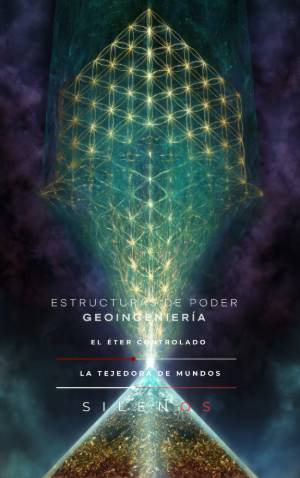

Illuminati
ESTRUCTURAS DE PODER Y GEOINGENIERÍA : El Éter Controlado
Sinopsis
¿Es el clima un fenómeno natural o un campo de batalla diseñado por estructuras de poder ocultas? "Estructuras de Poder y Geoingeniería: El Éter Controlado" ofrece una investigación rigurosa sobre la historia, la tecnología y la geopolítica de la manipulación atmosférica. Desde la figura del Tempestarius en la Europa altomedieval hasta la sofisticada ingeniería de frecuencias del siglo XXI, esta obra ensayística analiza cómo el control del cielo ha sido, históricamente, el eje sobre el que pivota el orden social y el poder político. A través de un análisis histórico-documental, los autores exploran: La Historia Invisible: De la teúrgia medieval a la institucionalización de la soberanía aérea. El Código Parsons: La intersección entre la magia operativa, la tecnología de cohetes y la apertura de portales tecnocráticos. La Guerra Biopolítica: El legado de Wilhelm Reich, la termodinámica de la vida y la resistencia por la bio-soberanía frente a la radiación ambiental. La Era del Control Espectral: Un examen crítico sobre la tecnología HAARP, las redes 5G, la aspersión de aerosoles y la privatización del éter. Este manuscrito se posiciona como una herramienta esencial para comprender las dinámicas actuales de control biopolítico y la gestión técnica del entorno. Basado en el cotejo de archivos históricos, patentes oficiales y testimonios desclasificados, esta obra es una hipótesis de trabajo legítima destinada al debate intelectual y a la libre investigación científica sobre cómo la atmósfera se ha convertido en un activo de proyección de fuerza. ¿Qué descubrirás en esta obra? A través de 25 capítulos fundamentales, los autores desglosan el complejo entramado de la geoingeniería moderna, vinculando la toxicología ambiental, la neurotoxicidad y la alteración del microbioma con las estrategias deliberadas de control poblacional. Este es un mapa detallado para quienes buscan entender las fuerzas invisibles que moldean nuestra realidad física y biológica. Estructuras de Poder y Geoingeniería: El Éter Controlado es una obra de referencia para estudiosos de la geopolítica, la sociología de la tecnología y la historia esotérica que deseen cuestionar las narrativas convencionales sobre la estabilidad del cielo.